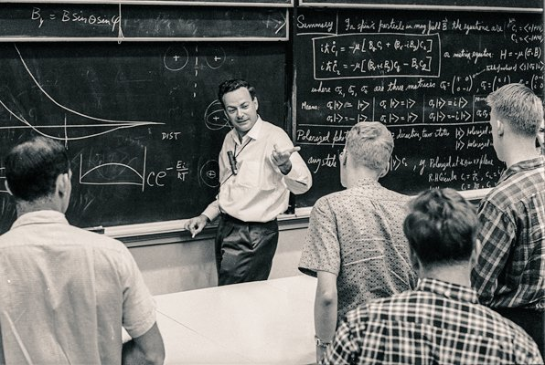

Richard Feynman
one of the ten greatest physicists of all time

Richard Feynman was talking to his audience.
Awards
Albert Einstein Award (1954)
E. O. Lawrence Award (1962)
Nobel Prize in Physics (1965)
Fellow of the Royal Society (1965)
Oersted Medal (1972)
National Medal of Science (1979)
Textbooks and lecture notes
Feynman, Richard P.; Leighton, Robert B.; Sands, Matthew (2005) [1970]. The Feynman Lectures on Physics: The Definitive and Extended Edition (2nd ed.). Addison Wesley. ISBN 0-8053-9045-6.
Feynman, Richard P. (1961). Theory of Fundamental Processes. Addison Wesley. ISBN 0-8053-2507-7.
Feynman, Richard P. (1962). Quantum Electrodynamics. Addison Wesley. ISBN 978-0-8053-2501-0.
Feynman, Richard P.; Hibbs, Albert (1965). Quantum Mechanics and Path Integrals. McGraw Hill. ISBN 0-07-020650-3.
Feynman, Richard P. (1967). The Character of Physical Law: The 1964 Messenger Lectures. MIT Press. ISBN 0-262-56003-8.
Feynman, Richard P. (1972). Statistical Mechanics: A Set of Lectures. Reading, Mass: W. A. Benjamin. ISBN 0-8053-2509-3.
Feynman, Richard P. (1985b). QED: The Strange Theory of Light and Matter. Princeton University Press. ISBN 0-691-02417-0.
Feynman, Richard P. (1987). Elementary Particles and the Laws of Physics: The 1986 Dirac Memorial Lectures. Cambridge University Press. ISBN 0-521-34000-4.
Feynman, Richard P. (1995). Brian Hatfield, ed. Lectures on Gravitation. Addison Wesley Longman. ISBN 0-201-62734-5.
Feynman, Richard P. (1997). Feynman's Lost Lecture: The Motion of Planets Around the Sun (Vintage Press ed.). London: Vintage. ISBN 0-09-973621-7.
Feynman, Richard P. (2000). Tony Hey and Robin W. Allen, ed. Feynman Lectures on Computation. Perseus Books Group. ISBN 0-7382-0296-7.